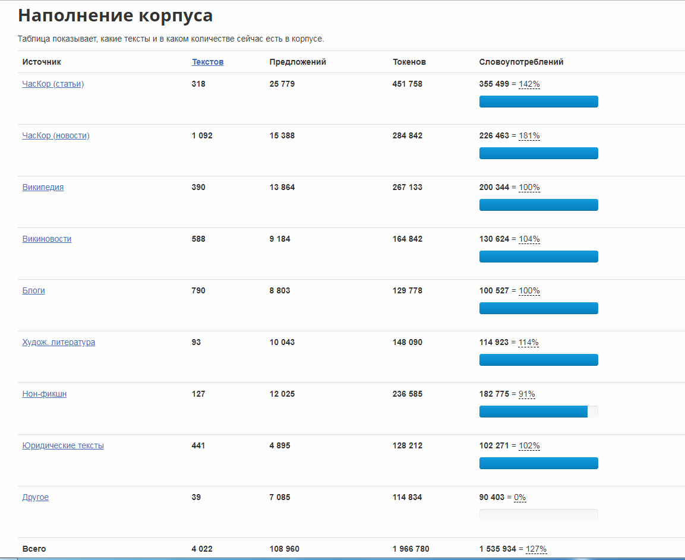
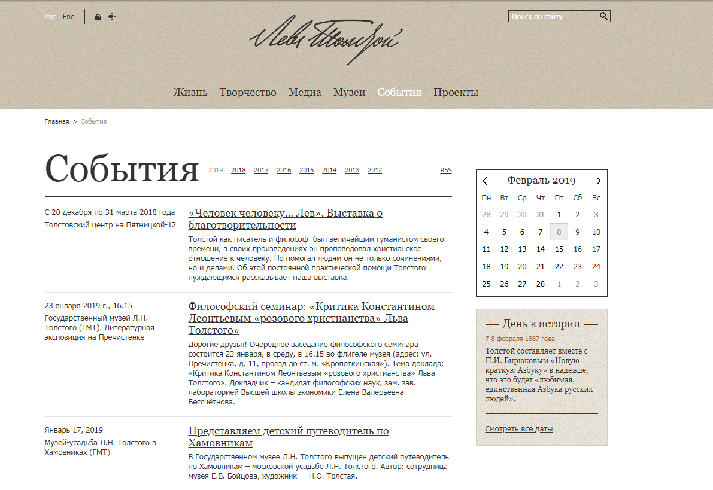
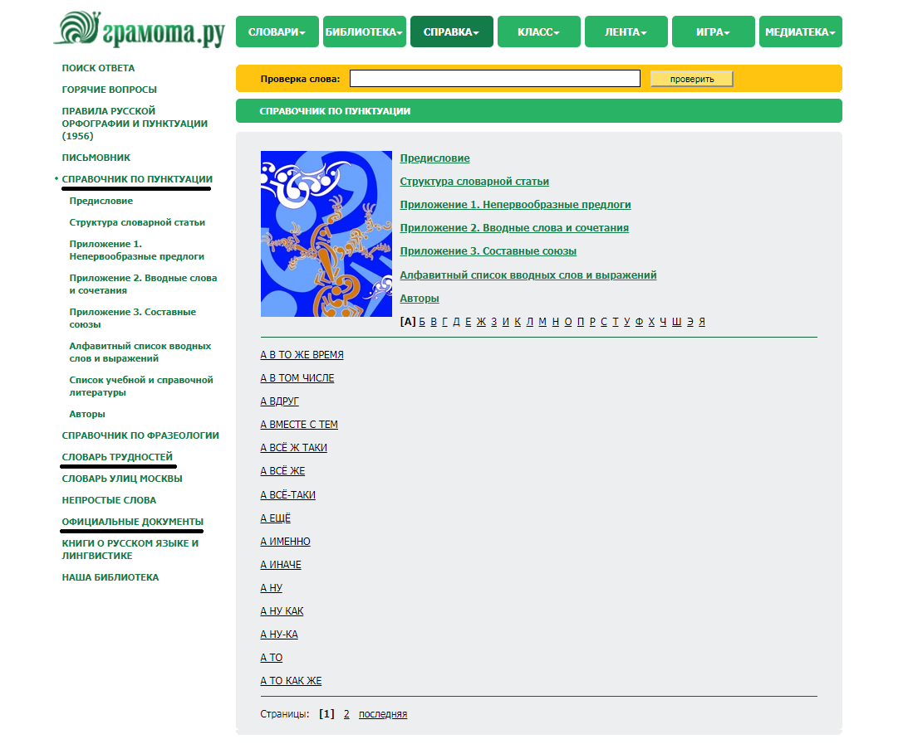

| ОТКРЫТЫЙ КОРПУС | GOOD | TOO BAD |
| NINETY(BRUH) / TEN(GOOD) | | |
|---|
|  |
Окрытым Корпусом я никогда раньше не пользовалась. Но из плюсов можно отменить минималистичный дизайн. Всё-таки чем меньше, тем лучше; чем проще, тем лучше.
Всё просто, не бросается в глаза, но в тоже время до приятного лаконично.
Десять минут моих рьяных попыток узнать, как тут и что, ничего не дали. Поэтому могу заявить, положа руку на сердце, остерегайтесь его.
|
Весь сайт можно назвать этаким минусом. Тяжело работать, непонятно, куда нажимать, где искать, что тебе нужно.Единственное, про что я уже сказала, это дизайн. Тут, конечно, постарались.
Или не старались. Даже если не хотели слишком много тратить на него времени, то вышло неплохо.
Постараться же стоило над начинкой, потому что неприятно обнаружить внутри шоколадного тортика пюре из горошка.
|
| ЛЕВ ТОЛСТОЙ | | |
| ЧУДО-САЙТ | | |
|---|
|  |
Внешне сайт до безобразия эстетичный: сделан в пастельных тонах. Глаза не слепит, хочется петь дифирамбы дизайнеру сайта. Удобная навигация сайта.
Что порадовало, так это то, что сайт двуязычный(переключение,кстати, простое). Как истинному ценителю шрифта, понравился шрифт(exuse moi за тавтологию) активных ссылок.
Множество классных штучек, типа календаря событий, статистики проектов. Сразу видно, что люди старались и делали на благо общественности.
А еще там есть множество фотографий Толстого. Причём можно задавать параметры фото(Ясная Поляна, Самара, Толстой в группах и т.д.).
Так же есть разделы его творчества: письма, дневники, публицистика. Еще есть проекты, один даже с НИУ ВШЭ. Хочется отметить и ссылки на социальные сети: видно, что сайт живёт и обладает обратной связью.
И отдельное спасибо за поиск по сайту. Ради этой функции готова миллионы раз благодарить создателей.
В общем и целом сайт замечательный. Удобный, красивый. В нём просто разобраться, а главное - не нагромождён лишней информацией. (А еще там почти нет рекламы) |
В отличие от большого количества плюсов, минусов тут почти нет. Ну, как почти, их совсем нет. Разве что хотелось бы шрифт основного текста чуточку интереснее. Но это придирки чисто личного характера.
Для меня - это просто наглядное пособие КАК НАДО делать сайт. Так что даже в этой графе "TOO BAD" я его хвалю, а точнее умных дядь и тёть, которые сделали такую красоту. |
| ГРАМОТА.РУ | | |
| ДЕВЯТЬ КРУГОВ АДА СО ВСЕМИ ВЫТЕКАЮЩИМИ | | |
|---|
|  |
Плюсами я бы назвала те три ссылки, которые я подчеркнула на картинке. Хотя эти разделы вызывают у меня двоякие эмоции: я искренне не понимаю, зачем они, но они вполне себе ничего.
Плюсом является то, что не хочется сразу выбрасывать технику, через которую тебе, к несчасть и зачем-то, понадобилось заходить на этот сайт, а просто закрыть вкладку и понимать, что есть вещи в мире и похуже, чем плохая оценка или сорвавшееся собеседование.
Например, этот сайт. Если про Льва Толстого я писала даже в графе минусов хорошее, тут всё наоборот. |
Одним по-настоящему ненастныйм днём забрела я на этот сайт. И сразу поняла, что сделала большую ошибку, которую уж точно не исправил, а ухудшил этот сайт.
Для начала посмотрим на его дизайн. Это с трудом можно назвать дизайном. Совершенно некрасиво. Нежная эстетическая часть меня только что содрогнулась в ужасе. Болезненно-жёлтый и болотно-зелёный.
Желание узнать что-то новое и понять, где допустил ошибку, сводиться к нулю. Цвета резкие и неприятные.
А теперь то, что поиграло на моих нервах: справочник по пунктуации. Сам сайт - это "Божественная Комедия" в виртуальном мире, а справочник по пунктуации - ледяное озеро Коцит. Не даёт совершенно никакого чёткого ответа, приходится листать сотни страниц материала в алфавитном порядке.
Проще говоря, не выходи на эту страницу, не совершай ошибки. |